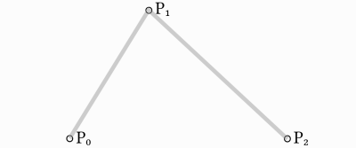
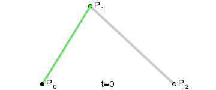
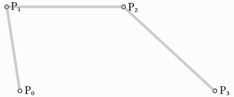
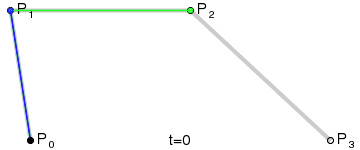
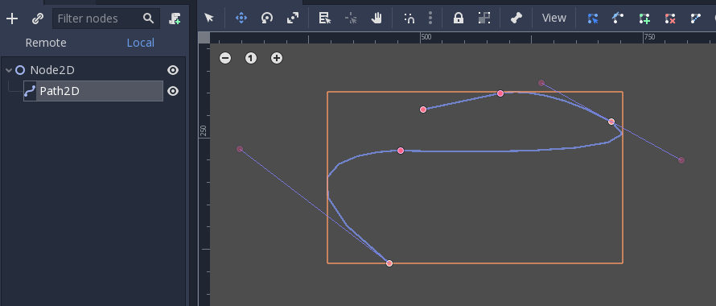
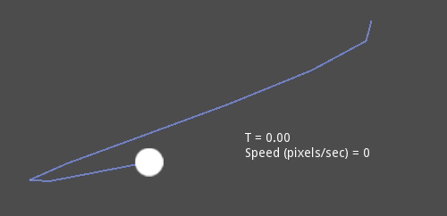

Beziers, curves and paths
Bezier curves are a mathematical approximation of natural geometric shapes. We use them to represent a curve with as little information as possible and with a high level of flexibility.
Unlike more abstract mathematical concepts, Bezier curves were created for industrial design. They are a popular tool in the graphics software industry.
They rely on interpolation, which we saw in the previous article, combining multiple steps to create smooth curves. To better understand how Bezier curves work, let's start from its simplest form: Quadratic Bezier.
Quadratic Bezier
Take three points, the minimum required for Quadratic Bezier to work:

To draw a curve between them, we first interpolate gradually over the two
vertices of each of the two segments formed by the three points, using values
ranging from 0 to 1. This gives us two points that move along the segments as we
change the value of t from 0 to 1.
func _quadratic_bezier(p0: Vector2, p1: Vector2, p2: Vector2, t: float):
var q0 = p0.lerp(p1, t)
var q1 = p1.lerp(p2, t)
private Vector2 QuadraticBezier(Vector2 p0, Vector2 p1, Vector2 p2, float t)
{
Vector2 q0 = p0.Lerp(p1, t);
Vector2 q1 = p1.Lerp(p2, t);
}
We then interpolate q0 and q1 to obtain a single point r that moves
along a curve.
var r = q0.lerp(q1, t)
return r
Vector2 r = q0.Lerp(q1, t);
return r;
This type of curve is called a Quadratic Bezier curve.

(Image credit: Wikipedia)
Cubic Bezier
Building upon the previous example, we can get more control by interpolating between four points.

We first use a function with four parameters to take four points as an input,
p0, p1, p2 and p3:
func _cubic_bezier(p0: Vector2, p1: Vector2, p2: Vector2, p3: Vector2, t: float):
public Vector2 CubicBezier(Vector2 p0, Vector2 p1, Vector2 p2, Vector2 p3, float t)
{
}
We apply a linear interpolation to each couple of points to reduce them to three:
var q0 = p0.lerp(p1, t)
var q1 = p1.lerp(p2, t)
var q2 = p2.lerp(p3, t)
Vector2 q0 = p0.Lerp(p1, t);
Vector2 q1 = p1.Lerp(p2, t);
Vector2 q2 = p2.Lerp(p3, t);
We then take our three points and reduce them to two:
var r0 = q0.lerp(q1, t)
var r1 = q1.lerp(q2, t)
Vector2 r0 = q0.Lerp(q1, t);
Vector2 r1 = q1.Lerp(q2, t);
And to one:
var s = r0.lerp(r1, t)
return s
Vector2 s = r0.Lerp(r1, t);
return s;
Here is the full function:
func _cubic_bezier(p0: Vector2, p1: Vector2, p2: Vector2, p3: Vector2, t: float):
var q0 = p0.lerp(p1, t)
var q1 = p1.lerp(p2, t)
var q2 = p2.lerp(p3, t)
var r0 = q0.lerp(q1, t)
var r1 = q1.lerp(q2, t)
var s = r0.lerp(r1, t)
return s
private Vector2 CubicBezier(Vector2 p0, Vector2 p1, Vector2 p2, Vector2 p3, float t)
{
Vector2 q0 = p0.Lerp(p1, t);
Vector2 q1 = p1.Lerp(p2, t);
Vector2 q2 = p2.Lerp(p3, t);
Vector2 r0 = q0.Lerp(q1, t);
Vector2 r1 = q1.Lerp(q2, t);
Vector2 s = r0.Lerp(r1, t);
return s;
}
The result will be a smooth curve interpolating between all four points:

(Image credit: Wikipedia)
Note
Cubic Bezier interpolation works the same in 3D, just use Vector3
instead of Vector2.
Adding control points
Building upon Cubic Bezier, we can change the way two of the points work to
control the shape of our curve freely. Instead of having p0, p1, p2
and p3, we will store them as:
point0 = p0: Is the first point, the sourcecontrol0 = p1 - p0: Is a vector relative to the first control pointcontrol1 = p3 - p2: Is a vector relative to the second control pointpoint1 = p3: Is the second point, the destination
This way, we have two points and two control points which are relative vectors to the respective points. If you've used graphics or animation software before, this might look familiar:

This is how graphics software presents Bezier curves to the users, and how they work and look in Godot.
Curve2D, Curve3D, Path and Path2D
There are two objects that contain curves: Curve3D and Curve2D (for 3D and 2D respectively).
They can contain several points, allowing for longer paths. It is also possible to set them to nodes: Path3D and Path2D (also for 3D and 2D respectively):

Using them, however, may not be completely obvious, so following is a description of the most common use cases for Bezier curves.
Evaluating
Only evaluating them may be an option, but in most cases it's not very useful. The big drawback with Bezier curves is that if you traverse them at constant speed, from t = 0 to t = 1, the actual interpolation will not move at constant speed. The speed is also an interpolation between the distances between points p0, p1, p2 and p3 and there is not a mathematically simple way to traverse the curve at constant speed.
Let's do an example with the following pseudocode:
var t = 0.0
func _process(delta):
t += delta
position = _cubic_bezier(p0, p1, p2, p3, t)
private float _t = 0.0f;
public override void _Process(double delta)
{
_t += (float)delta;
Position = CubicBezier(p0, p1, p2, p3, _t);
}

As you can see, the speed (in pixels per second) of the circle varies, even though t is increased at constant speed. This makes beziers difficult to use for anything practical out of the box.
Drawing
Drawing beziers (or objects based on the curve) is a very common use case, but it's also not easy. For pretty much any case, Bezier curves need to be converted to some sort of segments. This is normally difficult, however, without creating a very high amount of them.
The reason is that some sections of a curve (specifically, corners) may require considerable amounts of points, while other sections may not:

Additionally, if both control points were 0, 0 (remember they are relative vectors), the Bezier curve would just be a straight line (so drawing a high amount of points would be wasteful).
Before drawing Bezier curves, tessellation is required. This is often done with a recursive or divide and conquer function that splits the curve until the curvature amount becomes less than a certain threshold.
The Curve classes provide this via the
Curve2D.tessellate() function (which receives optional stages of recursion and angle tolerance arguments). This way, drawing something based on a curve is easier.
Traversal
The last common use case for the curves is to traverse them. Because of what was mentioned before regarding constant speed, this is also difficult.
To make this easier, the curves need to be baked into equidistant points. This way, they can be approximated with regular interpolation (which can be improved further with a cubic option). To do this, just use the Curve3D.sample_baked() method together with Curve2D.get_baked_length(). The first call to either of them will bake the curve internally.
Traversal at constant speed, then, can be done with the following pseudo-code:
var t = 0.0
func _process(delta):
t += delta
position = curve.sample_baked(t * curve.get_baked_length(), true)
private float _t = 0.0f;
public override void _Process(double delta)
{
_t += (float)delta;
Position = curve.SampleBaked(_t * curve.GetBakedLength(), true);
}
And the output will, then, move at constant speed: